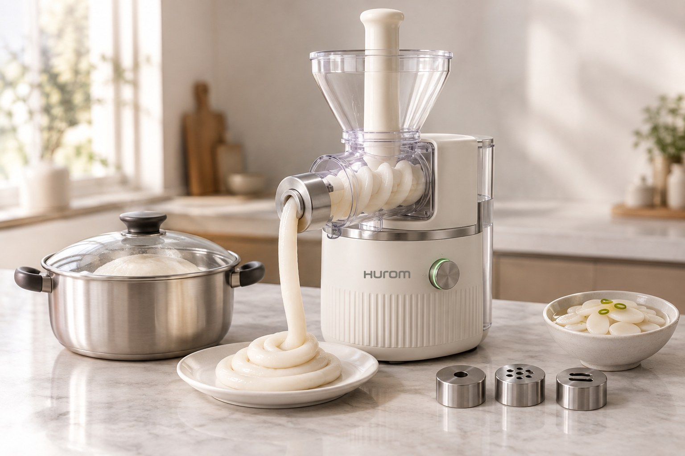
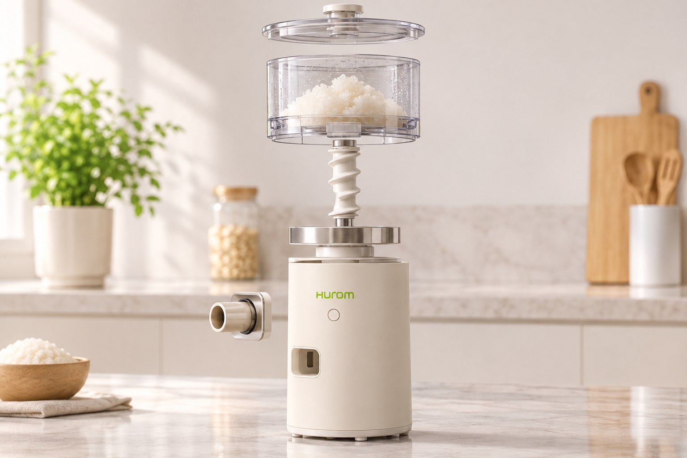
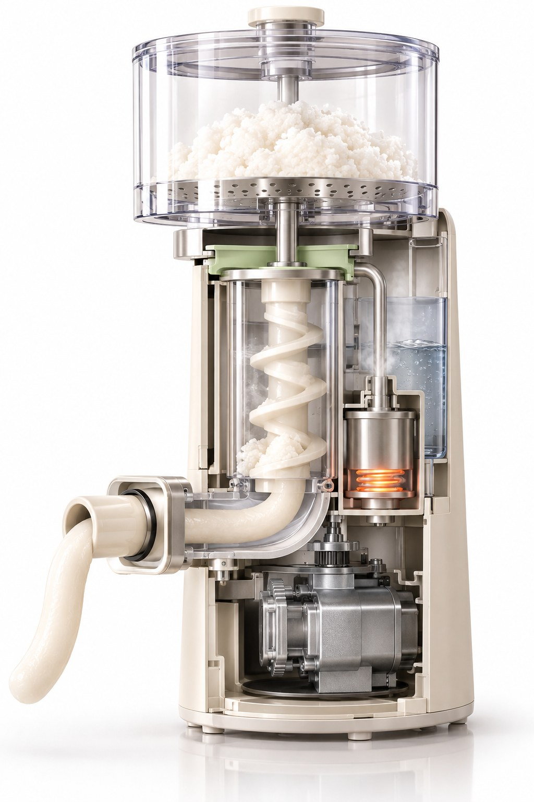

HUROM · 신제품 기획서 · 2026-11-22
찌고, 저속 스크루로 치고, 노즐로 뽑습니다. 방앗간의 제병기를 조리대 위 원액기 크기로 줄였습니다.
01 · 한 장 요약
숫자에는 근거를 붙였습니다. 견적이나 시험 전의 숫자에는 추정을 달았습니다.
02 · 문제
쌀가루를 고르게 찌려면 시루나 찜기와 면포가 필요하고, 20~30분 동안 불 앞을 지켜야 합니다.
찐 반죽을 치대야 쫄깃해집니다. 손으로 치대면 뜨겁고 힘이 들어서 집에서는 거의 하지 않습니다.
가래떡은 방앗간의 제병기로만 뽑을 수 있습니다. 명절에 맡기면 줄을 서야 하고, 최소 물량이 정해져 있습니다.
사 먹는 떡에도 불만이 있습니다. 하루만 지나도 굳고, 당과 첨가물이 걱정되고, 갓 뽑은 말랑한 가래떡은 방앗간 앞에서만 먹을 수 있습니다. 고객이 직접 한 말은 아직 모으지 않았습니다. 검증 1단계에서 설문과 리뷰로 모읍니다(아래 10). 그전까지 이 칸의 불편은 추정입니다.
03 · 왜 휴롬 · 왜 지금
방앗간 제병기는 찐 반죽을 스크루로 밀어 노즐로 뽑는 기계입니다. 휴롬이 원액기에서 다뤄 온 「천천히 눌러 밀어내는」 기술과 원리가 같습니다.
떡류 판매액은 2018년 5,641억 원에서 2024년 9,291억 원으로 늘었습니다. 온라인 떡·한과 거래액은 1년 새 두 배가 됐다는 보도도 있습니다.
떡볶이 떡은 해외에서 구하기 어렵고, 냉동 수입품은 딱딱합니다. 교포와 K-푸드 관심층에게 「집에서 뽑는 떡」이라는 이야기가 됩니다.
04 · 제품

몸체 뒤 물통(300mL)의 물을 작은 펌프가 조금씩 순간 히터로 보내 김을 만듭니다. 김은 관을 타고 찜통 아래로 들어가 구멍판 위 쌀가루를 찝니다.
구멍판이 열리면 찜통 바닥까지 올라온 스크루 끝이 찐 반죽을 물어 내립니다. 스크루가 분당 20~25회로 천천히 돌며 반죽을 눌러 치댑니다.
스크루 방향이 바뀌면 반죽이 앞 노즐로 밀려 나옵니다. 노즐 끝에서 찬물을 뿌려 겉을 식히면 떡이 들러붙지 않습니다.
| 주요 사양 (목표치 · 시험 전) | |
|---|---|
| 크기 · 무게 | 약 Ø18 × 높이 42cm · 약 5kg |
| 용량 | 쌀가루 300~450g(쌀 2~3컵) → 떡 약 500~700g |
| 전원 | 220V · 순간 스팀 히터 약 800W · 모터 약 150W(분당 20~25회, 출력 축 35 N·m 이상) · 동시에 돌지 않음 |
| 노즐 3종 | 가래떡 Ø2.5cm · 떡볶이 떡 Ø1.5cm · 인절미 판(넓적) |
| 모드 | 가래떡 · 떡볶이 떡 · 인절미/찹쌀떡 · 백설기(찌기만) |
| 닿는 부품 재질 | 스크루 · 스크루 통 울템(PEI) 또는 PPSU · 찜통 붕규산 유리 또는 PPSU · 구멍판 스테인리스(Ø16cm) · 노즐 안쪽 식품용 실리콘 |
| 조작 | 버튼 1개 + 불빛 4개(찌기 · 치기 · 뽑기 · 끝) · 앱 없음 |
| 세척 | 찜통 · 스크루 · 노즐을 떼어 물로 씻습니다. 목표는 3분입니다. |
04-1 · 3D로 안 보기
마우스로 돌리고 휠로 당겨 보세요. 「① 찌기」를 누르면 물통 → 스팀 히터 → 관 → 찜통으로 김이 가는 길이 보입니다. 치수는 목표치이고, 시제품에서 바뀝니다.
05 · 쓰는 장면
| 시각 | 사람이 하는 일 | 기계가 하는 일 |
|---|---|---|
| 14:00 | 마트에서 산 습식 쌀가루 450g과 물 반 컵을 찜통에 붓고, 가래떡 노즐을 끼운 뒤 버튼을 누릅니다. | 물통의 물로 스팀을 만들고, 찌기 불빛을 켭니다. |
| 14:25 | 다른 요리를 합니다. | 찌기를 마치면 바닥 판을 열어 반죽을 스크루로 내리고 치댑니다. |
| 14:33 | 긴 접시를 노즐 앞에 놓습니다. 갓 나온 떡을 한 줄 바로 먹습니다. | 떡을 뽑고, 노즐 끝에서 찬물을 뿌립니다. 다 뽑으면 「끝」 불빛과 소리로 알립니다. |
| 14:40 | 찜통 · 스크루 · 노즐을 떼어 물로 씻습니다. | — |
| 18:00 | 살짝 굳은 가래떡을 어슷하게 썰어 떡국 떡으로 둡니다. | — |
06 · 어려운 곳
| 어려운 곳 | 왜 어려운가 | 설계로 푸는 법 · 확인할 숫자 |
|---|---|---|
| ① 스크루 힘 | 찐 떡 반죽은 과일보다 훨씬 질기고 끈적합니다. 원액기 모터(약 150W · 분당 약 60회)로 노즐까지 밀어낼 수 있는지가 첫 관문입니다. | 감속비를 원액기보다 높여 더 천천히, 더 세게 밉니다. 스크루 끝 피치를 좁혀 압력을 올립니다. 확인할 숫자: 반죽 500g을 Ø2.5cm로 뽑을 때 모터 전류 · 온도. |
| ② 반죽이 식어 굳음 | 찐 반죽은 식으면 금방 굳습니다. 찜통에서 스크루로 내려가는 동안 식으면 뽑히지 않습니다. | 찜통을 스크루 바로 위에 두고 바닥판만 열어 떨어뜨립니다. 스팀 관이 스크루 통 옆을 지나 통을 데웁니다. 확인할 숫자: 찌기 끝 → 다 뽑을 때까지 10분 안. |
| ③ 세척 | 떡은 스크루 홈과 노즐 안에 들러붙습니다. 씻기 어려우면 두 번째부터 쓰지 않습니다. | 노즐 안쪽과 통로를 식품용 실리콘으로 하고, 노즐 끝에서 찬물을 뿌려 겉을 식힙니다. 확인할 숫자: 쓰고 30분 뒤 씻는 시간 3분 안. |
| ④ 쌀가루 | 방앗간 습식 쌀가루와 마트 건식 쌀가루는 물 양이 다릅니다. 물을 잘못 맞추면 떡이 질거나 갈라집니다. | 모드마다 물 양을 정해 찜통 안쪽에 눈금으로 표시합니다. 확인할 숫자: 건식 · 습식 각각 물 비율과 떡 갈라짐. |
열은 문제가 적습니다. 찐 반죽은 약 90°C이고, 울템은 약 200°C까지 버팁니다. 다만 스팀과 모터를 한 몸체에 넣으므로 모터 쪽으로 김이 새지 않는 구조가 필요합니다.
06-1 · 구조 검토
숫자는 모두 가장 나쁜 경우로 셈했습니다. 떡 반죽의 점도처럼 아직 잰 적 없는 값은 범위로 두고 추정을 달았습니다. 아래 단면 컨셉 이미지에서 실제로 만들 수 없는 곳도 같이 짚었습니다.

| 항목 | 계산 | 판단 |
|---|---|---|
| 찜통에 쌓이는 높이 | 젖은 쌀가루 600g ÷ 부피 밀도 0.6 ÷ 판 넓이 154cm² = 6.5cm | 걸림 떡집 시루는 보통 5cm 안쪽으로 얇게 펴서 고르게 찝니다. 판 지름을 Ø14 → Ø16cm로 키우면 5.0cm가 됩니다. |
| 스크루 통 부피 | Ø8.8 × 8cm − 스크루 심 = 약 400cm³ · 찐 반죽 650g ≈ 565cm³ | 걸림 반죽이 한 번에 다 들어가지 않습니다. 스크루 윗부분을 찜통 바닥 구멍까지 올려, 원액기 호퍼처럼 위에서 조금씩 물고 내려가게 합니다. |
| 전체 높이 | 몸체 22 + 받침 1.4 + 스크루 통 9 + 판 0.5 + 찜통 10 + 뚜껑 2 = 약 45cm | 걸림 뚜껑을 열려면 위로 10cm가 더 필요해서 55cm가 됩니다. 상부장 아래(보통 조리대 위 50~60cm)에서는 빠듯합니다. 뚜껑을 옆으로 여는 경첩형으로 하거나 몸체를 4cm 낮춥니다. |
| 노즐 높이 | 바닥에서 12cm | 통과 지름 25cm 접시를 노즐 아래에 놓을 수 있습니다. |
| 항목 | 계산 | 판단 |
|---|---|---|
| 스크루에 필요한 힘 | 반죽 점도 150~600 Pa·s 추정 · 날개 끝 틈 1.5mm · 분당 60회일 때 9~36 N·m | 걸림 원액기 모터(약 150W)를 분당 60회로 돌리면 낼 수 있는 힘은 약 12 N·m입니다. 반죽이 되면 3배가 모자랍니다. |
| 회전수를 낮추면 | 분당 20~25회 · 기어비 2.5~3배 → 낼 수 있는 힘 약 30~36 N·m | 통과 같은 모터로 최악값을 겨우 넘깁니다. 회전수를 원액기보다 낮추고 기어를 한 단 더 넣는 것을 기본으로 합니다. |
| 노즐에 걸리는 힘 | 압력 0.3~1.0 MPa 추정 × 노즐 4.9cm² = 150~490 N | 노즐 체결부가 이 힘을 받습니다. 끼우는 노즐은 반 바퀴 돌려 잠그는 금속 링으로 고정합니다(그림의 은색 링). |
| 찜통 재질 온도 | 김 100°C가 20~25분 계속 닿음 | 걸림 트라이탄은 열변형 온도가 약 100°C 근처라, 김에 매번 닿으면 뿌옇게 되거나 금이 갈 수 있습니다. 찜통은 붕규산 유리나 PPSU로 바꿉니다. |
| 스크루 통 재질 | 반죽 약 90°C + 압력 최대 1 MPa | 걸림 뜨거운 데다 눌리기까지 하니 트라이탄은 오래 못 갑니다. 울템(PEI) 또는 PPSU로 합니다. 둘 다 투명한 호박색입니다. |
| 데우는 시간 | 쌀가루·물 600g을 20 → 100°C로, 찜통 열 포함 약 155kJ ÷ (800W × 효율 60%) | 통과 약 5분 만에 김이 고르게 오릅니다. 찌기 20분을 더하면 25분입니다. |
| 물 쓰는 양 | 반죽에 맺히는 물 약 55g + 찌는 동안 빠지는 김 약 80g = 약 135g | 통과 물통 300mL로 넉넉합니다. 다만 55g이 반죽으로 들어가므로 레시피의 물 양을 그만큼 줄여야 합니다. |
| 전기 | 히터 800W와 모터 150W는 동시에 돌지 않음 | 통과 220V에서 최대 약 4A입니다. |
| 항목 | 문제 | 해결 |
|---|---|---|
| 여닫는 판 구동 | 판을 여는 힘이 따로 필요합니다. | 모터를 거꾸로 한 번 돌리면 캠이 판을 여는 구조로, 부품을 하나 줄입니다. 솔레노이드를 쓰는 안은 예비로 둡니다. |
| 스팀 새는 곳 | 찜통과 스크루 통 사이, 축 실링. | 찜통 테두리에 실리콘 패킹을 둡니다. 축은 원액기처럼 아래에서 올라오고, 축 실링은 반죽 쪽이 아닌 모터 쪽에 둡니다. |
| 씻을 부품 수 | 뚜껑 · 찜통 · 구멍판 · 스크루 · 스크루 통 · 노즐 · 링 = 7개 | 걸림 원액기보다 많습니다. 구멍판을 찜통에 붙이고 노즐과 링을 한 몸으로 하면 5개가 됩니다. |
| 떡이 나올 때 온도 | 노즐을 나오는 떡은 60~70°C 추정 | 걸림 아이가 바로 잡으면 덴 수 있습니다. 「끝」 알림 뒤 2분 동안 식히는 안내를 넣고, 광고 이미지에서도 아이가 갓 나온 떡을 잡는 장면은 피합니다. |
| 넘어짐 | 높이 45cm · 무게 약 5kg · 노즐 쪽이 앞으로 무거움 | 바닥 지름을 18cm 이상으로 하고, 고무발을 앞쪽에 하나 더 둡니다. |
07 · 시장과 대체재
| 대체재 | 가격 | 하는 일 | 한계 |
|---|---|---|---|
| 조지루시 떡 기계 BS-ED10 | ¥22,880 · 직구 약 27만 원 | 찹쌀을 찌고 치대 둥근 모찌 반죽을 만듭니다. | 뽑기가 없습니다. 가래떡·떡볶이 떡을 못 만듭니다. 일본 전압(100V) 제품입니다. |
| 타이거 떡 기계(力じまん) | 미국 약 $230~300 | 찌기 + 치대기 | 같은 한계입니다. 크고 무겁습니다. |
| 무명 떡 반죽기(국내 쇼핑몰) | 11~19만 원 | 찹쌀떡·인절미 반죽 | 브랜드가 없고 A/S가 불분명합니다. 뽑기가 없습니다. |
| 방앗간 | 떡값 + 대기 | 무엇이든 만듭니다. | 명절에 줄이 길고 최소 물량이 정해져 있습니다. 갓 뽑은 떡은 그 자리에서만 먹을 수 있습니다. |
| 시판 떡 | 1kg 약 5천~1만 원 | 사서 바로 먹습니다. | 금방 굳고, 첨가물과 당이 걱정됩니다. |
빈자리는 「뽑기」입니다. 찌고 치대는 기계는 일본에 있지만, 노즐로 가래떡과 떡볶이 떡을 뽑는 가정용 가전은 국내 쇼핑몰과 일본 제조사 제품 목록에서 찾지 못했습니다(2026-11-22 확인). 중국 쇼핑몰은 아직 보지 않았습니다.
08 · 숫자 · 가격 정책
모두 견적 전 숫자입니다 추정. 해외 ODM에서 만들어 들여오는 경우로 셈했습니다. 자사 원액기 라인의 스크루와 모터를 쓰면 BOM과 금형비가 줄어듭니다.
| 원가 사슬 (대당) | 금액 | 근거 |
|---|---|---|
| BOM | 6.3만 | 모터·감속기 1.6 · 스팀 히터·물통 0.9 · 찜통·스크루·노즐 1.5 · 몸체 1.0 · 제어·전원 0.8 · 포장 0.5 추정 |
| ODM FOB | 8.2만 | BOM × 1.3(조립·이윤) 추정 |
| 관세 · 물류 · 통관 검사 | 1.3만 | 관세 8%(FTA 원산지면 0%) · 해상 운송 · 식품 닿는 부품 검사 추정 |
| 국내 입고 원가 | 9.5만 | |
| A/S · 반품 충당 | 5% | 순매출의 5% 추정 |
| 마케팅 | 1.5만 | 대당 추정 |
| 유통 수수료 | 30% | 자사몰과 오픈마켓을 섞은 평균 추정 |
| 정가 | 부가세 뺀 값 | 유통 30% 뺀 순매출 | 대당 공헌이익 | 손익분기 |
|---|---|---|---|---|
| 24.9만 | 22.6만 | 15.8만 | 4.0만 | 약 8,400대 |
| 29.9만 (권장) | 27.2만 | 19.0만 | 7.0만 | 약 4,800대 |
| 34.9만 | 31.7만 | 22.2만 | 10.1만 | 약 3,300대 |
| 고정비 | 금액 | 내용 |
|---|---|---|
| 개발 · 설계 | 1.2억 | 기구 · 회로 · 시제품 3차 추정 |
| 금형 | 1.5억 | 스크루 · 찜통 · 몸체 · 노즐 3종 · 실리콘 추정 |
| 인증 | 0.3억 | KC 전기용품 안전인증(전열 기구) · 전자파 적합성 · 식품용 기구 재질 시험 추정 |
| 해외제조업소 등록 · 최초 수입 정밀검사 | 0.05억 | 식품 닿는 부품을 해외에서 만들면 수입 7일 전 등록이 필요합니다(수입식품안전관리특별법). |
| 신뢰성 시험 · 초도 검사 | 0.3억 | 수명 · 낙하 · 스팀 누설 · 과열 추정 |
| 합계 | 3.35억 |
| 1차 물량 | 대당 상각 | 29.9만 원일 때 대당 이익 | 24.9만 원일 때 대당 이익 |
|---|---|---|---|
| 3,000대 | 11.2만 | −4.2만 | −7.2만 |
| 5,000대 | 6.7만 | +0.3만 | −2.7만 |
| 10,000대 | 3.4만 | +3.6만 | +0.6만 |
09 · 안전 · 규제
스팀 히터가 있어 전열 기구 안전인증 대상입니다. 물통이 비면 히터를 끄고, 과열되면 온도 퓨즈가 끊습니다.
찜통이 몸체에 끼워져야만 스크루가 돕니다. 노즐 입구는 손가락이 들어가지 않는 크기로 합니다.
식품위생법의 기구·용기 기준에 맞춰 재질 시험을 받습니다. 테플론(PTFE) 코팅은 쓰지 않습니다.
10 · 시제품에서 확인할 것
원액기 스크루와 모터로 찐 반죽을 뽑습니다. 멥쌀과 찹쌀, 습식과 건식 쌀가루를 나눠 봅니다.
5명이 쓰고 씻습니다. 찌기부터 다 뽑을 때까지 45분 안에 끝나는지 잽니다.
원액기 고객과 일반 고객을 나눕니다. 가격 24.9 / 29.9 / 34.9만 원별로 묻습니다.
떡집 장인이 방앗간 가래떡과 나란히 놓고 맛과 식감을 비교합니다.
출처